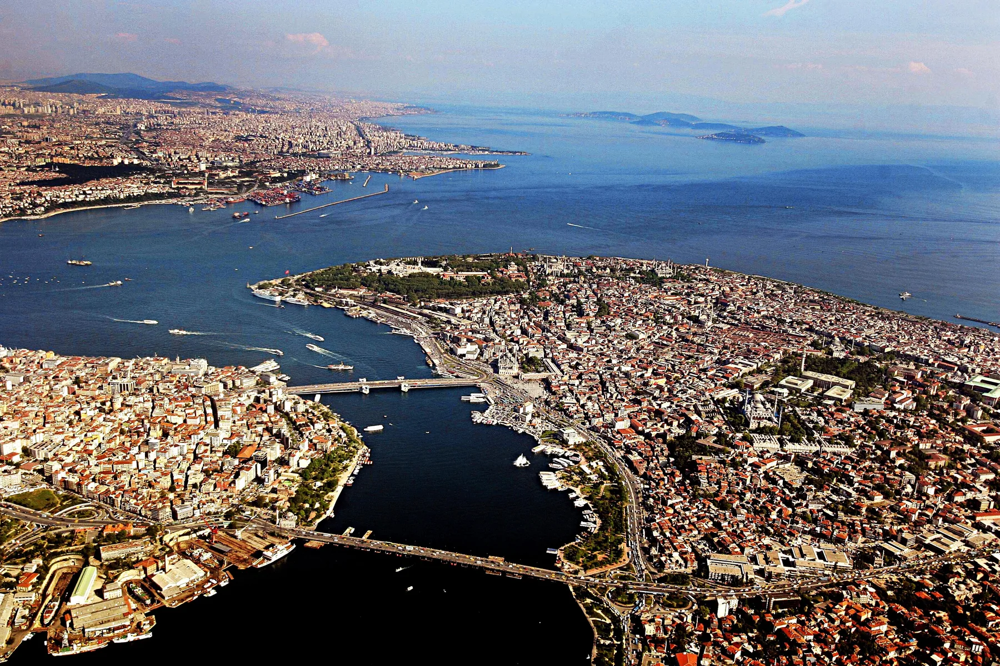
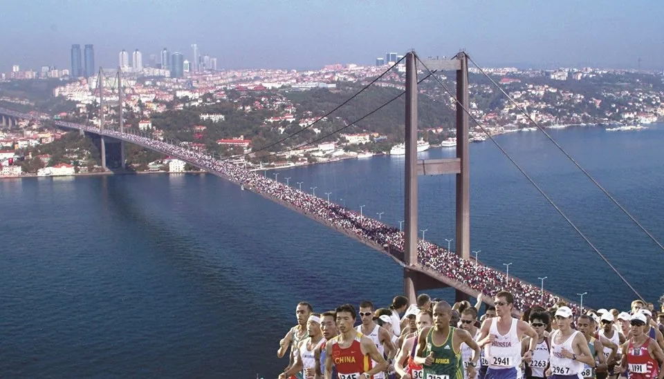
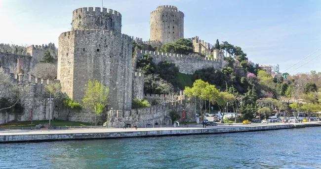
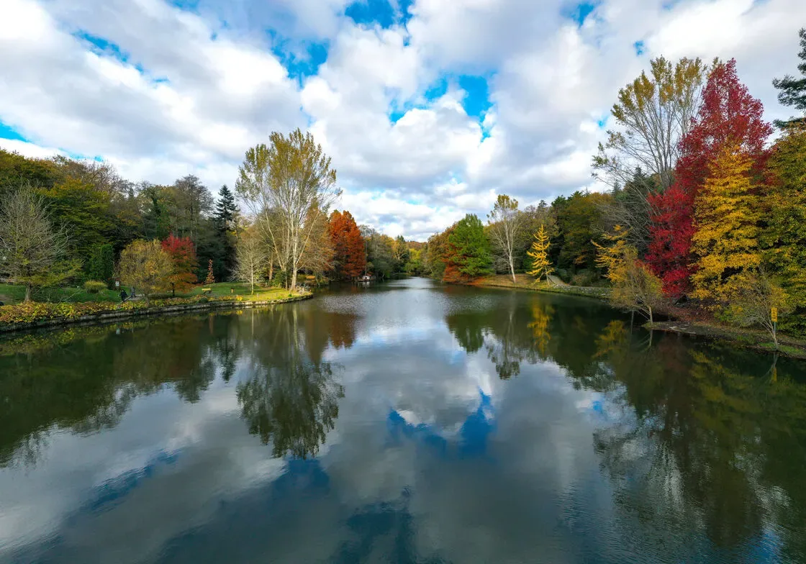
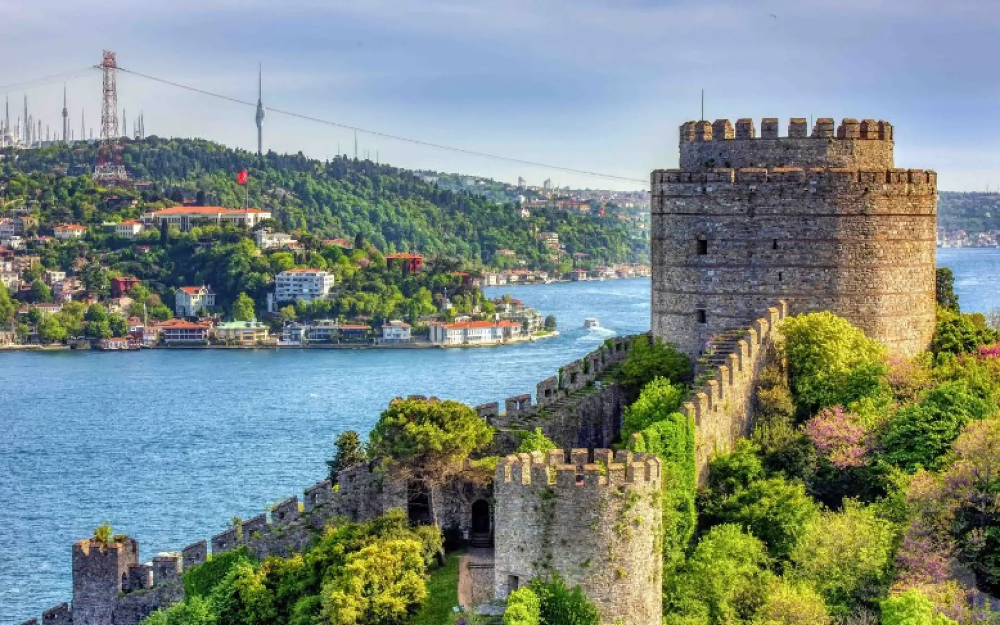
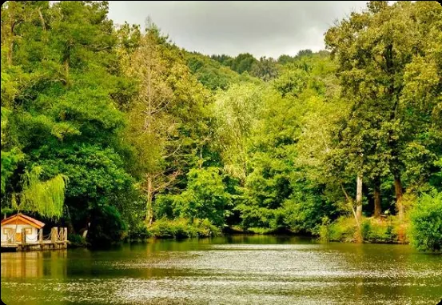

Şehir Kültür İstanbul Projesi
Megakent’in İçinde
Zamanın Durduğu Yerler
İstanbul’u Boğaz’ın mavisiyle başlayan, insan hafızasıyla derinleşen ve Arboretum’un yeşil sessizliğine uzanan canlı bir şehir arşivi olarak okuyoruz.
Mavi Boğaz
İnsan katmanı
Yeşil Arboretum

Mavi Hafıza
Boğaz
Boğaz
Yeşil Hafıza
Arboretum
Arboretum
Mini Etkileşim
İstanbul deyince aklınıza ilk hangi renk geliyor?
Sunumda bu soruyu sınıfa sorup ardından “Biz gri İstanbul’un içindeki mavi ve yeşil hafızayı göstermek istedik.” diyebilirsiniz.
Projenin Derdi
İstanbul’u yeniden okumak
Bu çalışma İstanbul’u tek bir kalabalık görüntüsü olarak değil; doğanın, tarihin ve insan hikâyelerinin üst üste biriktiği yaşayan bir arşiv olarak ele alır.
Sayfanın omurgası Boğaz üzerine kurulur. Boğaz, İstanbul’un hem doğal güzelliğini hem stratejik önemini hem de gündelik kültürünü görünür kılar. Belgrad Ormanı ve Atatürk Arboretumu ise bu mavi hafızanın yanında kentin korunan yeşil belleğini temsil eder.

Öncelikli Tema
Boğaz: İstanbul’un mavi omurgası
Bu sayfanın merkezinde Boğaz var. Çünkü Boğaz yalnızca iki kıta arasındaki su yolu değildir; şehrin hafızasını taşıyan bir sahne, gündelik hayatın ritmi ve İstanbul’u dünyaya bağlayan doğal bir kapıdır.
Üç Katmanlı Anlatım
Mavi, insan ve yeşil hafıza
Sayfanın akışı, sunumdaki “canlı kütüphane / insan gen havuzu / bitkisel gen havuzu” fikrine sadık kalır.
Katman 1
Mavi Hafıza
Boğaz; iki kıtayı ayıran ama aynı anda birleştiren doğal omurgadır. Vapur, yalı, köprü, martı ve sahil yaşamı bu hafızanın parçalarıdır.

Katman 2
İnsan Hafızası
İstanbul; göçlerin, semtlerin, dillerin, sınıfların ve günlük ritimlerin bir arada yaşadığı büyük bir insan havuzudur.

Katman 3
Yeşil Hafıza
Belgrad Ormanı ve Atatürk Arboretumu, megakentin içinde zamanı yavaşlatan canlı bir ağaç müzesi ve yeşil sığınaktır.
İnteraktif Rota
Boğaz’dan Arboretum’a nefes rotası
Noktalara veya rota kartlarına tıklayarak sunumda kullanabileceğiniz kısa geçiş cümlelerini görün.
Seslerle İstanbul
Boğaz’ın sesi, şehrin uğultusu, yeşilin sessizliği
Bozuk gelen deneysel mikser kaldırıldı. Yerine bilgisayarda dosya olmadan çalışan, site içinde yerel olarak bulunan daha yumuşak üç ses kartı eklendi.
Mavi
Boğaz / dalga / vapur
Sunum açılışında 8–10 saniye kullanılabilir.
Şehir
Uzak İstanbul uğultusu
“İstanbul’u duymak” bölümünde düşük seste deneyebilirsiniz.
Yeşil
Arboretum / kuş / rüzgâr
Boğaz’dan yeşil hafızaya geçerken kullanılabilir.
Beğendiğiniz dış bağlantılar
İndirilemediği için gömülmedi; isterseniz sunum sırasında ayrıca açabilirsiniz.
Soundsnap: İstanbul restoran ambiyansı Apple Music: İstanbul BoğazıGörsel Hafıza
Boğaz ağırlıklı maviden yeşile fotoğraf akışı
Galeri Boğaz temasını öne çıkaracak şekilde yenilendi. Kendi çektiğiniz fotoğraflarla aynı dosya adlarını değiştirirseniz site otomatik güncellenir.


Mini Quiz
Sunum sonunda 5 soruluk etkileşim
Arkadaşlarınız veya hoca sayfaya girerse hızlıca deneyebilir.
Ekip ve Kaynaklar
Üç kişilik proje çalışma alanı
İsimleri ve görevleri isterseniz index.html içinden kolayca değiştirebilirsiniz.
Eren Can Kelbaş
Web sayfası, interaktif rota ve teknik düzenleme.
Beyzanur Güngör
Sunum akışı, anlatım geçişleri ve sınıf içi sunum.
Özlem Özdeniz
İçerik metni, kavramsal çerçeve ve görsel kaynaklar.